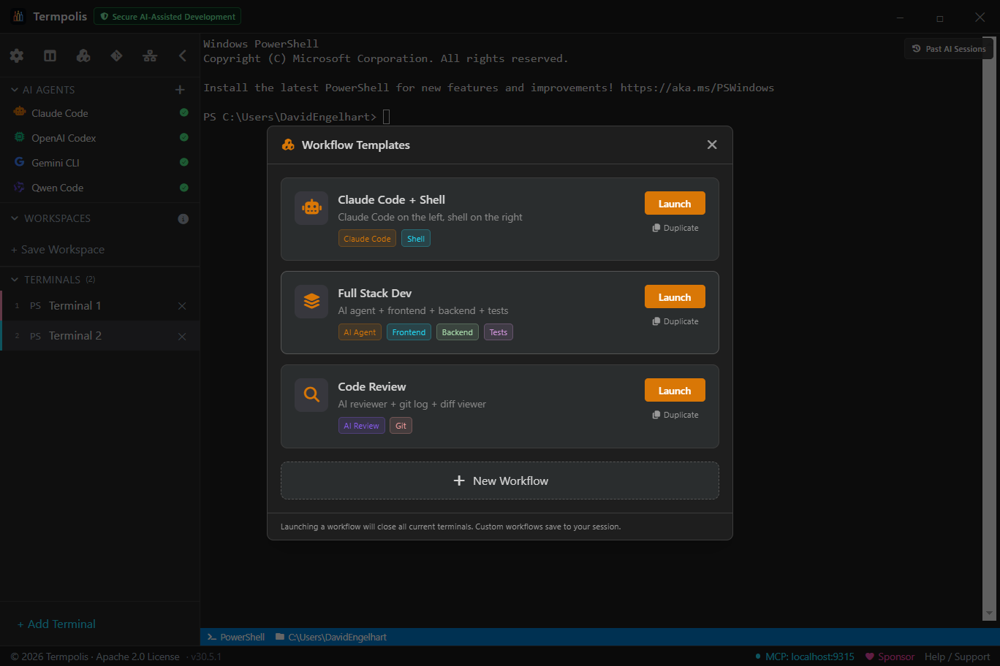
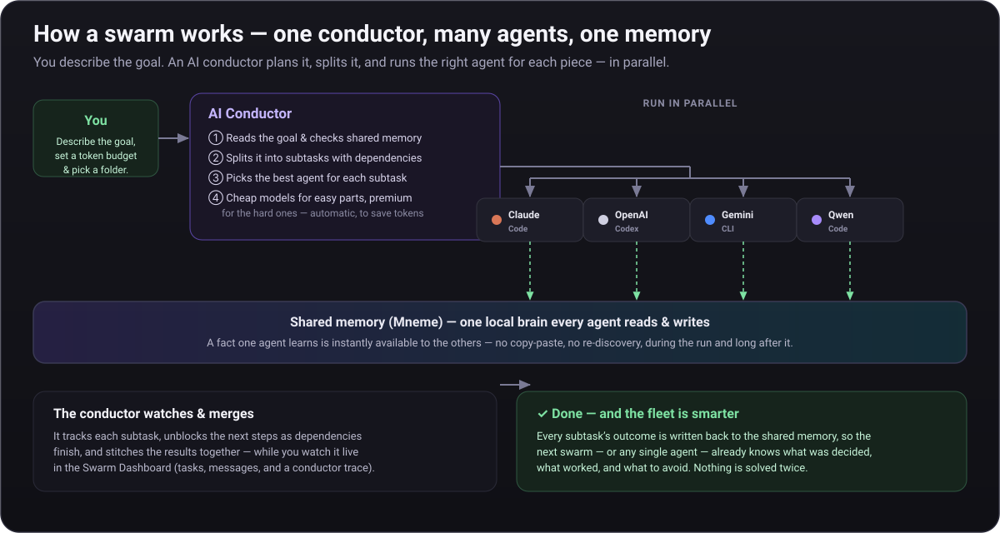
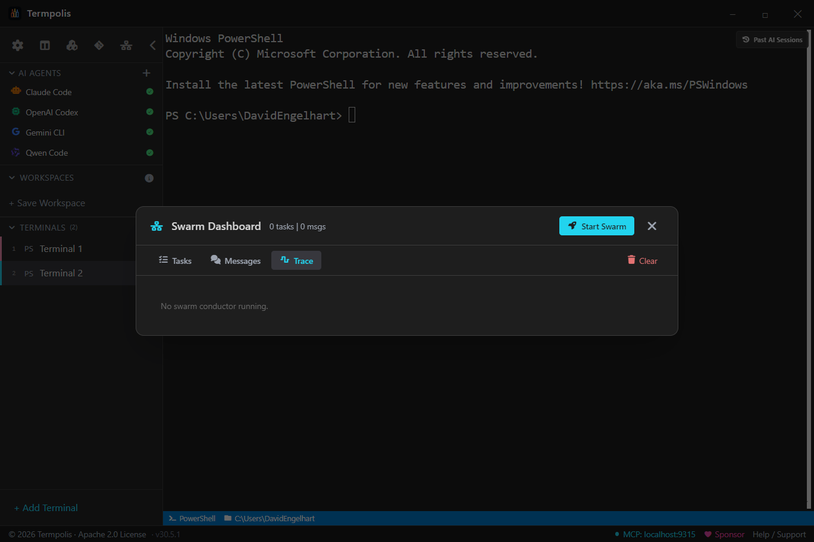
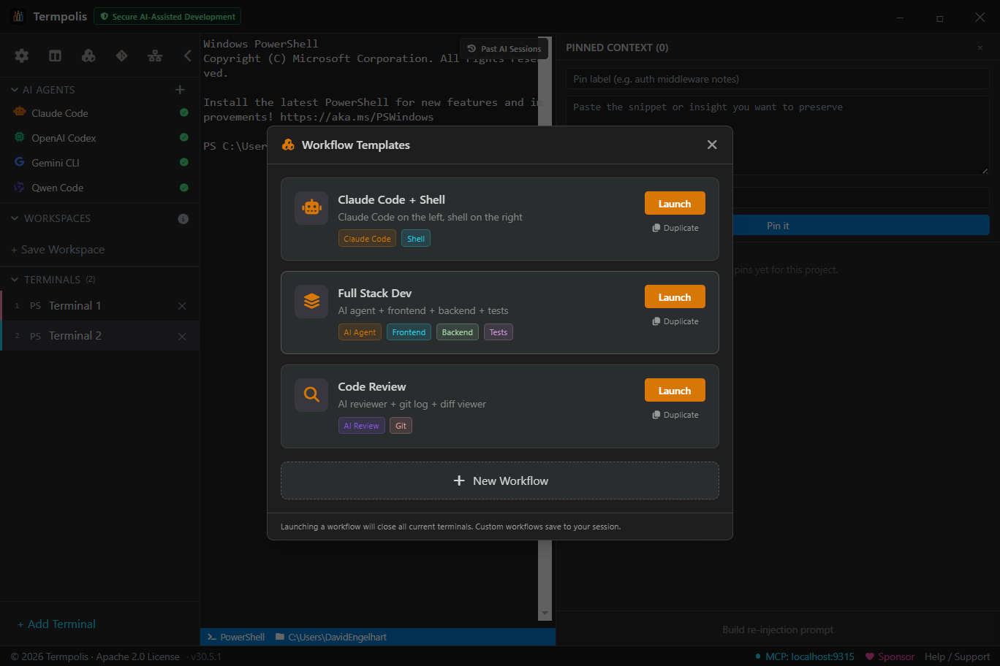
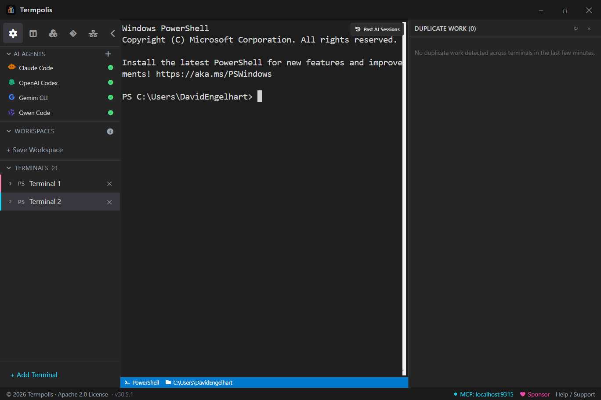
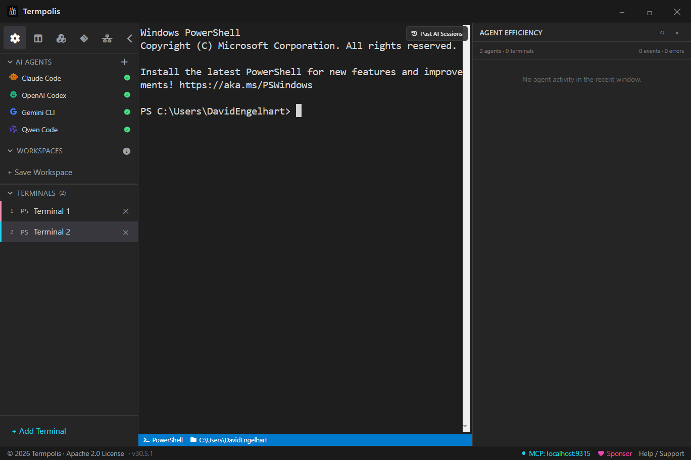
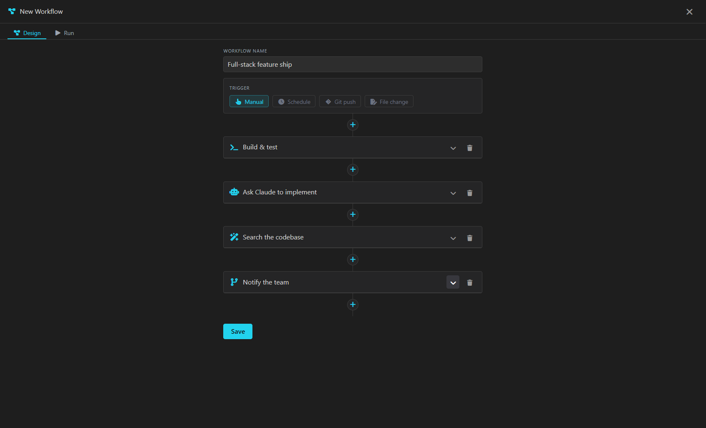
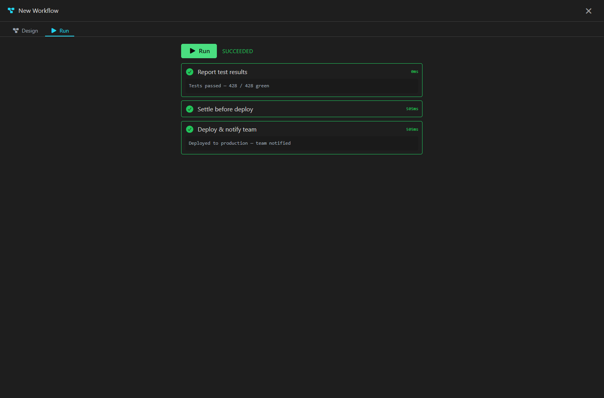

Local-first AI terminal · Claude · Codex · Gemini
Termpolis
Stop re-explaining your codebase to AI.
- 🧠 Mneme · one memory, all 3 agents
- 🌱 Learns from every session
- 🔀 Second Opinion · agents review each other
- 🔒 100% local · no cloud · no telemetry
- 📦 Free & open source
At the heart of Termpolis is Mneme — a local memory brain that Claude, Codex, and Gemini all share, and that learns as you work. Every agent already knows your project, your decisions, and what got figured out yesterday; and when an agent finishes a task, Mneme quietly distills the lesson into the shared brain, so your whole fleet gets smarter the more you use it. No re-explaining, no reloading context, and nothing leaves your machine.
Free forever Termpolis is free and open source, and will always remain free. If it's useful to you, consider sponsoring the project.
- Never re-explain context — a fresh Codex or Gemini terminal opens already knowing your project
- Learns automatically — distills the fix, the decision, the gotcha from every session
- 100% local & private — in-process embeddings, default-on at-rest encryption (OS-keychain device key), no server, no telemetry
- Runs your real agents — Claude, Codex, Gemini unchanged, with prompt security scanning + an optional swarm

🧠 Meet Mneme · the memory that learns
Mneme: one memory across every agent — that learns as you work
Mneme — named for the Greek muse of memory — is the local brain at the heart of Termpolis, and it does more than remember: it learns. Every AI session normally starts cold: you re-explain what you're doing and burn tokens reloading context. Mneme is a local “brain” that all three agents share, that learns from every session, and that lasts between terminals, agents, and app restarts. It parses your past AI transcripts, embeds them locally and offline, and — when an agent finishes a task — distills the lesson (the fix, the decision, the gotcha) into the shared store; then Claude, Codex, and Gemini all recall the most relevant context on demand over the built-in MCP server. Nothing to set up, nothing to click.

Learns from every session
When an agent finishes a chunk of work, Termpolis quietly distills what it learned — the fix, the decision, the gotcha — plus its own track record into the brain, so the fleet gets smarter the more you use it. Automatic for Claude, Codex, and Gemini (from their session transcripts).
One memory, three agents
Every agent reads and writes the same store over the built-in MCP server
(memory_search / memory_write / memory_list).
A fact Claude figures out is instantly available to Codex — no copy-paste, no
re-discovery.
Survives close & reopen
The vector index and knowledge graph are persisted as plain JSONL on disk
(swarm-memory.jsonl in the Termpolis data directory) — a portable,
human-readable log, no native database to install. Embeddings and edges reload at
startup, so you can quit Termpolis, reopen it tomorrow — the context is still there.
Feeds itself, automatically
A background indexer ingests your past Claude / Codex / Gemini transcripts on a quiet timer (10 s after launch, then every 30 min). It's idempotent — only genuinely new content is embedded — so the brain grows with zero effort.
Fully offline. No server. No secrets.
Embeddings run in-process via WASM with a bundled bge-small-en-v1.5
model — no Ollama, no native binaries, nothing leaves your machine. The indexer
reuses the sensitive-file denylist, so .env files, keys, and credentials
are never embedded.
Syncs across your machines
Point the memory at any synced folder — Dropbox, OneDrive, iCloud Drive, Google Drive (mirror mode), or Syncthing — and every device shares one brain. Each machine writes its own shard, so there are no merge conflicts: the union is conflict-free, even when two devices edit offline. No Termpolis cloud, no account.
Portable: export your whole brain to a .zip
New in v1.21: Export Memory writes your entire brain
— memories, the knowledge graph, learning stats, and the code graph — to a
single integrity-checked .zip you can back up or carry anywhere.
Import Memory verifies every file’s hash before merging it in
(grow-only, so it never clobbers an existing brain). A manual, portable snapshot
alongside the automatic folder sync.
Encrypted at rest, key in your keychain
A local store is encrypted by default with AES-256-GCM
under a per-device key generated into your OS keychain (Windows DPAPI / macOS Keychain /
Linux libsecret) — no passphrase, and where no keychain is available it stays
plaintext and says so rather than faking it. Turn on cross-machine sync and the key is a
scrypt passphrase you share; your cloud provider only ever sees ciphertext.
Vector RAM, and an int8 toggle willing to say “no”
New in v1.25.5. Your vectors live in the main process — the same thread that pumps the terminal — so vector RAM is not an abstraction: at multi-GB it means GC pauses on the one thread whose stalls you feel as typing lag. So Settings → Memory & Learning → Vector memory is a decision aid, not a bare toggle. It polls live — vector RAM, main-thread stall (event-loop p99), GC pauses, and the vectors’ share of the process — then recommends from that machine, and it is willing to tell you the toggle won’t help you: your main thread is stalling, but the vectors are a small fraction of this process — freeing them would not fix it, and you would lose exactness for nothing. A control that only ever markets itself is an upsell, not a tool. int8 is 4× less vector RAM, off by default, recall parity against the exact-float baseline is benchmarked and CI-gated, and it is losslessly reversible — disk always keeps exact floats, so this is an in-RAM representation, never a data migration. How it decides →
How it works
Capture → embed → store → recall → learn
1. Capture — your on-disk AI transcripts are parsed (tool-call,
reasoning, and system-prompt noise stripped) and split into chunks.
2. Embed — each chunk becomes a 384-dim vector locally, in
process, via onnxruntime-web (WASM). 3. Store —
chunks and vectors persist in a durable on-disk log, deduplicated by content hash so
re-indexing is cheap. 4. Recall — any agent calls
memory_search over MCP and gets the most relevant past context back,
blending semantic vector search with keyword matching. 5. Learn —
on task boundaries, sessions are distilled into reusable lessons and per-domain
self-competence, so what the fleet recalls keeps getting better. The result: stop
re-explaining context every session, and stop paying to reload it.
The learning loop
Not just storage — a memory that gets smarter
Most “AI memory” is a bucket you write to and read from. Mneme runs a full learning cycle on top of the store: it reflects on finished work, consolidates while idle, reasons over how memories connect, ranks recall by what has actually helped before, and reconciles when two agents learn contradictory lessons — all local, all automatic.

1 · Reflect
When a task finishes — or a solo session pauses — Mneme distills the episode into a reusable lesson (the problem, the fix or decision, the gotcha) and updates its own per-domain track record. A high-precision gate means only substantive work is distilled, and a flaky distiller model can never block the task.
2 · Consolidate — the “sleep” pass
Between tasks Mneme compresses the brain the way sleep consolidates memory: stale, untagged, unconnected chatter decays out, near-duplicates merge, and dense clusters roll up into summaries. It only ever plans compression and writes archival edges — a tagged, linked, or important memory is never forgotten.
3 · Connect — reason over the graph
Typed edges aren’t inert labels. At recall time a solves or caused-by link pulls its neighbour up, a memory a newer one supersedes is dropped so stale answers stop resurfacing, and a connection outside its valid time window is skipped.
4 · Rank by what actually helped
Recall doesn’t rank on similarity alone. It fuses semantic relevance, recency, importance (a distilled lesson outranks raw chatter), and how often a memory has proven useful — then a diversity rerank keeps near-identical hits from crowding out varied context, with a floor so a thin recall never starves the agent.
5 · Anticipate
Before you solve a task, memory_anticipate surfaces the solutions the fleet
already found for it, memory_pool gathers what two or more agents
independently arrived at (the most-corroborated knowledge), and
memory_selfcheck reports calibrated confidence from past outcomes — so
the agent starts already knowing what the fleet knows.
6 · Reconcile — catch cross-agent contradictions
New in v1.19.5: memory_conflicts scans the shared brain
for pairs of lessons that different agents learned that assert opposite things
about the same subject — one agent says “always run migrations before
seeding,” another “never.” It surfaces the disagreement so you can
resolve it (keep the winner, mark the loser with a supersedes link).
Read-only and deliberately high-precision — it would rather miss a subtle conflict
than raise a false one.
🕸 New in v1.23 · The Weave
One fabric across memory, code, and every repo
v1.23 weaves the brain and the code graph into a single fabric. Recall stops being just text and starts pointing at the code a lesson is about — and the non-obvious connections across your whole workspace are drawn ahead of time, so agents reason faster.
Memory ↔ code bridge
Stored lessons and decisions now carry structured code anchors (file + symbol), so recall crosses straight from “this is how we fixed the auth bug” to the exact function it lives in — and, in reverse, from a function to everything the brain knows about it. The two stores used to be islands; now they share a key.
Predict where to fix it
Hand code_locate an error or a problem description and it returns a ranked list
of {file, symbol, why:[past lessons]} — the code most likely responsible,
each with the fixes and decisions that point there. The 32nd MCP tool, so an agent reaches
for it first when debugging instead of grepping blindly.
The Weave — a background connection-miner
While you’re idle, a weaver continuously draws connections across the entire unified brain: cross-repo code-structure analogies, cross-repo answer/decision analogies, and the bridge edges above — materialized ahead of time with provenance and a weight floor so the graph stays high-signal. The connections are already there when an agent needs them.
Per-repo graph & a memory that never deletes
The code graph is now keyed per repository — a second repo no longer clobbers the first, and each repo’s durable on-disk store means a transient non-git directory won’t wipe it. And idle consolidation moves aged memories to a cold-archive tier instead of deleting them, so nothing curated is ever lost and deep recall still reaches them.
🌱 New in v1.25 · Learns from what you ship
Real work is the training signal
A brain that only learns from its own chatter is a brain that flatters itself. In v1.25 the learning loop is fed by the things that are actually true or false about your work — a commit that landed, a test suite that passed or failed — and the code graph it has been quietly building is finally something you can see.
Competence calibrates on commits & tests
Self-competence used to learn only from swarm tasks, so if you worked solo the “competence by domain” panel simply sat empty. Now a landed commit and a test run — passing or failing — both feed the calibration. The failing suite is the important half: it is what moves confidence down, and a self-assessment that can only go up isn’t calibration, it’s flattery.
Code connections, finally visible
Indexing a repo has always built a structural code graph (symbols, plus call and reference edges) — but the dashboard only ever counted the semantic memory graph, so “connections” could read empty on a fully indexed repo. A new Code connections tile surfaces the real code graph beside it: two graphs, two honest counts.
The Weave: “what is this code for?”
A new typed explains edge links the memory that explains a
piece of code to the code chunk itself — so recall can answer “why is
this function like this?” with the decision that made it. The edge only mints
when both the embedding similarity and a shared
file/symbol anchor agree, so a merely chatty neighbour can’t claim to explain
code it never touched. Analogies now also mint within a repo
(previously cross-repo only), with the similarity floor relaxed
0.82 → 0.72.
🔬 Proof, not claims
Measured — and reproducible — against the tools you'd compare us to
Don't take our word for it. Every number below is produced by a test in the open-source
repo that runs against the real on-device model in CI and
fails the build if it regresses — reproduce them yourself with
npm run bench:proof and npm run bench:recall. Competitor
capabilities are sourced from each vendor's public docs as of July 2026
(marks: ✅ ships, ⚠ partial / opt-in / preview, ❌ not available).
~20 ms lookup
Median local semantic recall (p50) over a 180-memory store — faster than
re-reading one file, and it never leaves your machine. Verify: npm run bench:proof.
0.97 recall@10
The right memory lands in the top 10 for 97% of queries
(nDCG 0.80, MRR 0.74) on a 34-query labeled set. Verify: npm run bench:recall.
38× token leverage
One recall hands the agent ~305 tokens of relevant context for an ~8-token query — context you'd otherwise re-type or re-read every session.
It learns & relates
Mark a memory unhelpful and it leaves recall; a bug and its fix become a
typed, traversable link (bug → solved-by → fix). Both measured, both gated.
Sub-linear at scale
Past ~50k memories a pure-TypeScript HNSW approximate-nearest-neighbour index engages automatically — the same class of index behind Pinecone, Weaviate and pgvector, but native-free and 100% local. (Smaller stores use an exact scan; the ~20 ms above is that exact path.)
Head to head
Memory & learning vs Claude Code, OpenAI Codex & Antigravity
The real gap isn't speed alone — it's that a persistent, learning memory with typed relationships, shared across every agent and running fully local, is something the incumbents structurally don't have. Their memory is stored facts / notes / grep‑able files, not a brain that ranks by feedback and models how things connect.
| Memory & learning capability | Termpolis | Claude Code | OpenAI Codex | Antigravity |
|---|---|---|---|---|
| Persistent cross-session memory | ✅ local JSONL, survives restart | ✅ CLAUDE.md files |
⚠ opt-in preview | ⚠ preview, ~20-item cap |
| Semantic recall of memory (by meaning) | ✅ on-device embeddings (0.97) | ❌ loads CLAUDE.md verbatim |
❌ greps MEMORY.md |
❌ notes (semantic over code only) |
| Learns from feedback (demote / reinforce) | ✅ measured | ❌ static instructions | ❌ no feedback ranking | ❌ static notes |
| Typed relationship graph (bug→fix, decision→superseded) | ✅ traversable, measured | ❌ flat markdown | ❌ flat files | ❌ code graph ≠ memory graph |
| Memory anchored to the code it explains | ✅ typed explains edge |
❌ prose, no code anchor | ❌ prose, no code anchor | ❌ notes don't link into the code graph |
| Shared across all your agents | ✅ Claude + Codex + Gemini | ❌ Claude-only (its own CLAUDE.md) |
❌ OpenAI-only | ⚠ in-app models only |
| 100% local / offline / no telemetry | ✅ on-device WASM, no server | ❌ cloud model | ❌ cloud | ❌ cloud |
Termpolis cells are backed by reproducible tests (npm run bench:proof,
npm run bench:recall) that gate CI. Competitor cells sourced July 2026 from
Claude Code memory docs,
Codex Memories docs, and
Antigravity Knowledge docs.
Spot something out of date? File an issue and we'll fix it.
🔀 Second Opinion
Have a different agent double-check the last answer
Every model has blind spots. From any AI terminal, hand the most recent answer to a different agent for a fast, read-only critique — the feedback is pasted right back into your terminal, ready to send to your primary agent or just read and discard.
Pick any installed agent
A Second Opinion dropdown on each AI terminal lists exactly what you have installed — OpenAI Codex, Gemini — with Claude and its models (Fable · Opus · Sonnet · Haiku) nested underneath. So while you drive Opus, you can have Fable — or Codex, or Gemini — sanity-check the last solution.
It reviews the real, recent work
Termpolis captures the terminal's most recent output, asks the chosen agent to review the latest solution or approach, and injects its concise feedback back as an unsent block — you decide whether to act on it.
Read-only & safe by design
A review needs no file access, so it runs the agent in one-shot headless mode — nothing it says touches your repo. The captured text is passed out-of-band, never on a command line, so a prompt scraped from your terminal can't inject a command.
Only what's installed shows up
The menu reflects real install detection and appears only on AI terminals. Gemini runs through the Antigravity CLI (agy), its current headless entry point.
⚡ New in v1.29 · Token Headroom
Compress what Claude Code sends — and cut your burn rate
Long sessions hit rate limits and compaction fast, and the biggest culprit is the file reads, command output, and pasted images the agent ships to the model every turn. Token Headroom compresses that traffic before it reaches Anthropic, so you get more work done per session before you hit a wall.
Always on for Claude Code
Every Claude session launches through a local, off-thread compression proxy — its own process, never the UI/PTY thread. No toggle, no setup. If it's ever unhealthy the launch goes direct, and a live session self-heals when the proxy recovers — so a hiccup costs you compression, not your agent.
It shrinks what actually costs you
Verbose Bash output, large file Reads, fetched web pages (HTML stripped to its text), and pasted images (downscaled below the model's cap) are compressed deterministically — and a result repeated within a session collapses to a one-line reference instead of being re-sent in full. Nothing is lost — the agent calls retrieve_full to pull any result back when it needs the detail.
Prompt-cache safe — proven
Naive compression busts Anthropic's prompt cache and costs you more. Headroom compresses deterministically, so re-sent history stays byte-identical and the cache keeps hitting. Measured: ~50% fewer tokens ingested per turn, cache preserved.
See the receipt
Settings → Token Savings shows the live % shrink of the tool output it compresses — session and all-time — and the share of your total input that removed, from Anthropic's real usage numbers on your machine, plus prompt-cache health. Scoped to what it measures, never inflated. Your memory brain is never touched.
Why not just use Claude Code or Codex?
The same agents — but with one memory that remembers and learns
Claude Code, OpenAI Codex, and Gemini CLI are excellent, and you'll keep using them — Termpolis runs those exact CLIs, unchanged. On their own, though, each one starts cold every session, can't see what the others did, and never learns. Termpolis wraps them in one shared, local, long-term memory — Mneme — so your whole fleet remembers your project and gets smarter the more you use it.
| What you get | Claude Code / Codex on their own | The same agent inside Termpolis |
|---|---|---|
| Long-term memory | Starts cold every launch — you re-explain the task and re-pay the tokens to reload context | Mneme: a local brain that holds months of context and survives restarts — recall in milliseconds |
| Shared across your tools | Each app is siloed — Codex has no idea what Claude just figured out | All three agents read & write one memory — a fact one learns, the others instantly recall |
| It learns | No learning — every session is a blank slate, forever | Distills a reusable lesson from every finished task and tracks its own competence, so recall keeps improving |
| Every new session | Re-explain your codebase and conventions from scratch | Opens already knowing the project; one-click handoff moves a task between agents with no re-explaining |
| Your data & lock-in | One vendor's account and cloud; retention/telemetry vary | 100% local, Apache-2.0, no account or backend; every prompt watched for secrets — a leak is named in a local audit log, and blocked outright at the git boundary |
Same agents, same accounts you already pay for — Termpolis is the workspace around them that remembers, learns, and keeps you out of the cold-start loop.
🔁 Cross-AI context handoff
Move a Claude session to Codex or Gemini — without re-explaining
Open Past AI Sessions from the sidebar. Termpolis indexes every
~/.claude/projects/**/*.jsonl transcript on your machine, shows
them with project label, age, message count, and size, and lets you continue
the work in any of the three supported agents — without manually copy-pasting
anything.
Resume natively
Spawns a new terminal at the original cwd and runs
claude --resume <session-id>. Or, if you already have a
plain shell focused, "Resume in active shell" runs the resume command in
the focused terminal — no new tab.
Continue in another AI
Pick Codex or Gemini from the Continue ▾ menu. Termpolis spawns a fresh
terminal at the same cwd, boots the chosen agent, and pastes a synthesised
CONTEXT HANDOFF prompt summarising what's been done so the
new agent picks up exactly where the old one left off.
Inject into the focused AI
Already have an AI shell open? "Inject context into active shell" pastes the handoff prompt straight into that agent's input box. The button is disabled for plain shells (where it would just splat into the command line) and the tooltip explains why.
Pasted as one blob, not a stream of commands
The handoff prompt is wrapped in xterm bracketed-paste markers
(ESC[200~ … ESC[201~) so the receiving agent treats it as a
single paste rather than dispatching one keypress / submit per embedded
newline. Result: the agent sees one coherent context block, not what looks
like a flurry of random commands.
⚖ How Termpolis compares
Termpolis vs other AI terminals
We won't fabricate competitor features — every cell below is sourced from each tool's own public documentation as of July 2026. If a vendor ships a feature we missed, file an issue and we'll update. Marks: ✅ ships in product, ⚠ partial / opt-in / 3rd-party, ❌ not available, — unknown.
| Capability | Termpolis | Warp | Wave Terminal | Air (JetBrains) | Tabby |
|---|---|---|---|---|---|
| Open source & self-hostable Source available, you can audit/fork |
✅ Apache 2.0 | ✅ AGPL v3 client (Apr 2026) | ✅ Apache 2.0 | ❌ Closed source (JetBrains) | ✅ MIT |
| No required cloud account Works the day you install it, no signup |
✅ No Termpolis account | ⚠ No login to install; account for full AI/sync | ✅ No account; free AI needs telemetry | ⚠ JetBrains Account for AI features | ✅ No account |
| Multi-agent swarm (parallel agents w/ live conductor) Runs Claude + Codex + Gemini together |
✅ Up to 8, local conductor | ⚠ Oz: parallel subagents, cloud conductor | ⚠ Parallel agent blocks; no conductor | ⚠ Parallel agents in Git worktrees; no live conductor | ❌ Terminal only — agents via MCP plugin |
| Persistent shared memory across agents & sessions One local brain Claude · Codex · Gemini all read/write; auto-indexes past chats + the code of repos you open; semantic recall + knowledge graph; encrypted cross-machine sync |
✅ Local, cross-agent — distills a reusable lesson from every session | ⚠ Agent Memory: cloud, preview-only | ❌ Per-chat history only | ⚠ Manual rules files, no auto-memory | ❌ Terminal only — no AI memory |
| Every prompt watched for secrets (97 rules) Detection, not prevention — the hit is named in a local audit log ( DB_PASSWORD, never the value) so you know what to rotate |
✅ Local, every prompt, can't be turned off | ⚠ Secret Redaction (~18 patterns, opt-in) | ❌ | ❌ | ❌ |
| Secret scan at the git boundary Blocks the commit or push when a key is in the staged diff or an unpushed patch. Real pre-commit / pre-push hooks cover git typed into any terminal — and keep working with Termpolis closed |
✅ Blocks — doesn't just warn | ❌ Redaction is prompt-scoped, not git | ❌ | ❌ | ❌ |
| Secrets scrubbed before they enter the AI memory Stripped before a memory is hashed, embedded, or written — so a key in an old transcript can't be recalled back into an agent later |
✅ Prevention, at write time | ⚠ Agent Memory is cloud-side | ❌ No AI memory | ❌ Manual rules files | ❌ No AI memory |
| Scans third-party AI artifacts before install Skills, plugins, slash-commands, subagents, MCP servers — static scan + install gate |
✅ Safe Import — 41 rules, red can't install | ❌ | ❌ | ❌ | ❌ Plugin store, no artifact scan |
| Sensitive-file-read alert (.env, *.pem, ~/.aws/*) Banner + audit when an agent autonomously reads a high-risk file |
✅ Built-in | ❌ | ❌ | ❌ | ❌ |
| Per-agent egress audit (netstat / ss / lsof) Records every remote host the AI agent talks to |
✅ Built-in | ❌ | ❌ | ❌ | ❌ |
| Provider ToS drift watcher Weekly hash-check on Anthropic / OpenAI / Google terms. It files an issue against this repo so the claims on this page stay true — it is not an in-app alert to you |
✅ Weekly GitHub Action | ❌ | ❌ | ❌ | ❌ |
| Local JSONL audit log Every prompt-secret hit, block, and egress entry stays on disk — with an in-app viewer |
✅ Rotated, on-disk only | ⚠ Cloud history | ⚠ Local history (chat blocks) | ⚠ JetBrains AI history (cloud) | ⚠ Shell history |
| Cross-AI context handoff Resume a Claude session inside Codex / Gemini |
✅ One click, bracketed-paste safe | ❌ | ❌ | ⚠ Same IDE, no auto-digest | ❌ |
| Cross-agent peer review (Second Opinion) One installed agent read-only double-checks another's last answer — injection-safe |
✅ Any installed agent, per terminal | ❌ | ❌ | ⚠ Fresh-session reviewer checks the diff | ❌ |
| Hunk-by-hunk swarm review w/ test gate Accept/reject each diff hunk before commit |
✅ Built-in review | ⚠ Interactive Code Review, no test gate | ⚠ AI block edits | ⚠ Agent review + diff viewer; no test gate | ⚠ Via git add -p |
| Termpolis-side telemetry on you Lower is better — what the tool itself collects |
✅ None by default · opt-in crash reports only | ⚠ Product analytics | ⚠ Anonymized telemetry (opt-out) | ⚠ Anonymous usage stats, opt-out | ⚠ Mixpanel analytics on by default, opt-out |
| Price for the editor itself Provider API costs are separate |
✅ Free forever | ⚠ Free · Build $20 · Max $200 · Business $50/user | ✅ Free | ⚠ Free preview (macOS/Linux/Windows) · pricing TBD | ✅ Free |
How to read this table. A ✅ in the Termpolis column does not mean the other tools are bad — they're optimised for different threat models and use cases. Warp ships the cleanest UI; Wave ships workspace blocks; Air ships an agent-first JetBrains IDE; Tabby ships a fast self-hostable terminal with an MCP plugin. Termpolis trades all of that polish for security primitives that hosted-model users currently have to build by hand: a watch on every prompt that names what leaked, a secret block at the git boundary, static scanning of third-party skills and MCP servers before they install, egress audit plus an allowlist policy, ToS drift, sensitive-file alerts, parallel multi-agent orchestration with a local conductor, and a persistent cross-agent memory brain that lives on your machine (no cloud, no account). Pick the one that maps to your threat model. If something here is wrong, please file a GitHub issue and we'll fix it.
Sourcing notes (July 2026). Warp open-sourced its client on April 28, 2026
(github.com/warpdotdev/warp) under
AGPL v3 (UI crates MIT), but the AI, agents, Oz orchestration, and Warp Drive backend remain proprietary
cloud — the OSS client is not self-hostable for AI. Warp ships local Secret Redaction (~18 built-in
patterns plus custom, redacted before data leaves the machine, opt-in / off by default), so its secret-scanner
cell is ⚠ rather than ❌; Oz now auto-orchestrates parallel multi-harness subagents, but the conductor is
cloud-hosted, not a local one. Air is the JetBrains agentic IDE built on the retired Fleet codebase; the preview
now runs on macOS, Linux, and Windows (Windows landed June 2026), runs agents in parallel Git worktrees, and
can spin up a fresh-session reviewer agent that comments on a diff — a diff-scoped second opinion, hence the ⚠
marks (jetbrains.com/air).
Tabby is the open-source terminal at
github.com/Eugeny/tabby;
its desktop app ships Mixpanel analytics on by default (Tabby + OS version, opt-out), and AI agents reach it only
via a third-party MCP plugin (sessions are not orchestrated end-to-end the way a Termpolis swarm is).
On the memory row: Warp's cross-agent Agent Memory (Oz) is the
closest equivalent but is cloud-hosted, account/team-bound, and in research preview as of
July 2026 — it auto-extracts facts and supersedes contradictions, but lacks the decay / causal-rank / self-adaptation learning
loop Mneme runs; Wave keeps only per-chat history; JetBrains Air uses manual instruction/rules files with no
auto-memory; Tabby is a terminal with no AI memory. Termpolis's brain is local, automatic, cross-agent, semantic,
and learning — it distills a reusable lesson from every substantive session and tracks its own
competence (see the docs).
On the two v1.25 security rows: Warp's Secret Redaction is scoped to data leaving
for the AI provider, not to git commit / git push, so it is ❌ on the
git-boundary row rather than ⚠; and none of the four documents a security scan of third-party AI artifacts
(skills, subagents, MCP servers) before installing them — Tabby ships a plugin store, but without an
artifact scanner. If that has changed, please file an issue and we'll update the row.
On the prompt row, the two claims are different things and should be read that way:
Warp's redaction attempts prevention (opt-in, off by default); Termpolis
detects and records — always on, 97 rules, naming what leaked so you can rotate it — and does
not claim to stop a secret you send to a model. Prevention in Termpolis lives at the git boundary
and the memory layer, where it is actually enforceable
(why the prompt path is detection-only).
🛡 AI Security Center
Defense in depth for the hosted-model path
The honest framing: any tool that lets you talk to a hosted model is, by definition, sending your prompt to that provider. Termpolis cannot air-gap a prompt you choose to send, cannot guarantee a provider's stated retention policy is enforced server-side, and cannot stop a provider from later changing their terms. If your threat model requires those guarantees, run a local model — but accept the quality and hardware trade-off.
What Termpolis can do is make the hosted path substantially safer than typing into a stock terminal, a browser, or a VS Code plug-in. Every check below runs locally, every log stays on the machine, and every limit is named.
New in v1.25: the perimeter now covers the places a secret actually escapes — and the place a threat actually walks in. The git boundary (a commit or push carrying a key is blocked, not just logged), the memory store (a secret is scrubbed before it can ever be embedded or written), egress (a host outside the AI-provider allowlist is a violation, not another log line), and third-party AI artifacts — skills, plugins, subagents, and MCP servers are statically scanned before they are wired into an agent.
New in v1.25.2: the prompt path is watch, not block — and it now says so. Every byte you type reaches the agent immediately and unmodified; on submit, a shadow copy is scanned against 97 rules and a hit is recorded, never withheld. Termpolis does not prevent a secret reaching a model through a prompt — nothing in a terminal can, once the agent already holds your line. It names what leaked so you can rotate it. Prevention happens where it is actually possible: the git boundary and the memory layer.
New in v1.25.6 — three of these controls were lying, and now aren’t.
A coverage sweep put real tests on security code nobody had ever tested, and found them.
The GnuPG private-keyring watcher rule could never fire:
secring.gpg — the private keyring, the one file the rule exists to catch
— had been grouped into the rule’s own exclusion list beside the public
ones, so an agent reading it was met with total silence, which reads exactly like
“nothing happened”. A NaN limit defeated the
audit-log clamp and returned the whole log instead of a capped page
(typeof NaN === 'number' is true, and Math.min propagates NaN
rather than clamping it). And the Commit Shield kept reporting repositories
as PROTECTED after their hooks were gone — the protected-repo list
compared raw path strings, so installing via the folder picker and uninstalling from the
working directory never matched. All three are fixed, and each is now pinned by a test.
A security control that claims to be armed when it is not is worse than one that admits
it is off.
Every prompt watched (97 rules)
Once you launch claude, codex, or gemini,
every submit and every paste is matched against
97 secret rules — on a shadow copy. Your keystrokes
reach the agent immediately and unmodified: nothing is withheld, nothing
is rewritten, and the scan never runs per keystroke (~0.05 ms per submitted prompt).
A hit is recorded, not blocked — a prompt_secret_sent entry
naming what leaked, DB_PASSWORD (env_secret), and
never the value. That name is what tells you to rotate it. Coverage: AWS,
GitHub PATs, Azure, GCP, Stripe, Slack, JWT, PEM — caught bare in prose, no name needed —
plus named secrets in .env, appsettings.json, YAML, connection
strings and credentialed URLs, and shapeless secrets you introduce in your own words
("the api key is 8f3a9b2c…").
Limit — and it is the whole design: this does not prevent a
secret reaching the model. It cannot: by the time you hit Enter, the text is already in
the agent's own line buffer, so nothing written to the PTY can un-send it. Termpolis
detects and records here, and blocks where blocking actually works — the next two
cards.
Commit & push secret shield
New in v1.25. The same secret-rule engine now also runs at the
git boundary: on the staged diff (what
git commit is about to capture) and on every unpushed
patch (what git push is about to send). A hit
blocks the operation and names what fired. The prompt watch only ever
saw text you typed at an agent — and there it can only record. It never saw git,
so a leaked key could still land in your history and be pushed to a remote.
Git is a boundary that can actually be held, so this is a real stop, not
a log line. On by default; toggle in Settings → AI Security.
However you commit. Out of the box it gates the git operations
Termpolis itself runs. Install the pre-commit / pre-push
hooks (Settings → AI Security) and it also catches a secret in a
git commit typed straight into a terminal, an IDE, or a script. The hooks
shell out to a standalone scanner, so they keep working
even with Termpolis closed — a shield that only guards you while the app is
running would quietly stop guarding you the moment you quit, which is worse than none,
because you’d still believe you had one. An existing hook (husky, lint-staged) is
chained, never overwritten.
Fixed in v1.25.6: the protected-repo list compared raw path strings, so
a repo installed via the folder picker and uninstalled from the working directory never
matched — and kept being reported as PROTECTED after its hooks were
gone. It is now keyed on a canonical path, so the panel’s answer matches
reality.
Limit: the hook fails open — if Node or the scanner is
missing, git is never blocked, so a broken state degrades to no protection rather than
to a wedged workflow. And --no-verify bypasses any git hook: this is a
strong net, not a cage.
Secrets never enter the brain
New in v1.25. Mneme indexes your transcripts and source files,
which means a key pasted into a session is a key headed for long-term storage.
Secrets are scrubbed before a memory is hashed, embedded, or written
to disk — so a credential sitting in a transcript or an indexed source
file never lands in the store, and can never be recalled back into an agent's
context months later. Like git, this is a boundary Termpolis owns, so here it is
prevention, not a log entry: the secret never exists in the brain to leak.
This sits on top of the sensitive-file denylist that keeps
.env-class files out of the indexer entirely.
Limits: the same regex-shaped coverage as the prompt watch — an
unpatterned custom token can still be embedded — and it runs at write
time: it cleans what goes in from v1.25 onward, it does not
retroactively scrub a brain you built before it existed.
Sensitive-file-read alert
The prompt watch can only see what you type. When the agent
autonomously decides to read .env, id_rsa,
~/.aws/credentials, a *.pem, or any of the 16 other
high-risk patterns (20 rules in all), Termpolis subscribes to the agent's tool-call stream and
fires a banner + audit entry naming the file and the agent. The bytes already
went to the provider, so the alert is after-the-fact — but you now know to
add the path to .claudeignore (or rotate the secret) before the
next session.
Fixed in v1.25.6: one of those 20 rules — your GnuPG
private keyring — could never fire. secring.gpg had
been grouped into the rule’s own exclusion list alongside the public keyrings, so
the exclusion returned first and the match never ran. Only the public
pubring.* entries are excluded now.
Limit: watches the agent's own tool runtime — files exfiltrated
via spawned subprocesses (e.g. python -c 'open(".env").read()') only
show up if the wrapping Bash command parses to a known reader.
Code-chunk + env-dump heuristics
Prompts over 2 KB are inspected for code-shaped structure (indentation +
braces + keywords + module declarations) or 5+ KEY=value lines
suggestive of a pasted .env. Detections are surfaced in the UI
and written to the audit log as code_chunk_sent /
env_dump_sent, so you notice when an entire source file or
env file is on its way out. New in v1.25.2: these are their
own events — they used to share one with a real leaked credential, which
made a big paste look like a leaked key and inflated the count of secrets sent.
Limit: heuristic — false negatives possible on minified or
unusual shapes. The prompt isn't blocked; you decide.
Weekly ToS drift watcher
A scheduled GitHub Action fetches the three provider pages we cite (Anthropic commercial terms, OpenAI enterprise privacy, and Google Gemini API terms), normalises the HTML, hashes it, and opens a tracking issue when the hash changes — so what the app advertises stays aligned with what providers actually publish. Limits: it detects rendered-text changes, not legal intent — a human still reads the diff. And it is maintainer-facing: it files an issue against the Termpolis repo so our published claims stay honest. It does not raise an in-app alert to you, and it is no substitute for reading your provider's terms.
Per-agent egress audit
netstat (Windows), ss (Linux), or lsof
(macOS) is asked which remote hosts the AI agent's PID has open, and every unique
host:port goes to the audit log — so you can answer "did Claude
talk to anything other than api.anthropic.com today?". The poll runs
on demand, when you open the Security panel — deliberately
not on a background timer: the old every-60 s netstat loop
was itself load-bearing in a Windows Defender false positive, and a security feature
that gets your app quarantined is a net negative.
Limit: sampling, not packet capture — a connection opened and closed
between polls is never seen; no payload inspection.
Egress Guard
New in v1.25. The egress audit recorded where each agent
connected; now it is a policy. Any host outside the known
AI-provider allowlist is raised as a violation — which is the
signal that actually matters for exfiltration, instead of a wall of normal traffic
you have to read. Matching is dot-anchored, so
evil-anthropic.com does not pass as Anthropic.
Limit: it flags and audits — it never kills your agent — and it
inherits the polling blind spots of the audit it sits on.
Gemini account-mode auto-detect
Reads GEMINI_API_KEY, GOOGLE_API_KEY,
GOOGLE_GENAI_USE_GCA, and
GOOGLE_APPLICATION_CREDENTIALS+GOOGLE_CLOUD_PROJECT
to classify the active Gemini session as paid (training-excluded) or free
(Google may use prompts for product improvement). Strict Mode
intercepts gemini launches that look free-tier and refuses to
forward them — the launch command never reaches the shell, and the block is audited.
This is the one security control that ships off: it can refuse a
launch you meant to make, so you opt into it deliberately. Everything else here
(audit log, Commit Shield, Egress Guard, memory scrub) is on by default,
and the prompt watch cannot be turned off at all.
Limit: env-var heuristic — a Workspace Code Assist licence carrying no
env vars is classified as unsafe, and credentials shipped some other way can't be
classified at all.
Agent command enforcement
A sanitizer intercepts every swarm-launched agent command, strips unauthorized
flags (-p, --sandbox) and any injected prompt, and pins
each agent to its exact approved launch command — so a conductor can't be steered
into an unsafe invocation.
Limit: covers the MCP command surface, not arbitrary subprocesses
an agent spawns itself.
Local JSONL audit log
Every AI terminal open/close, every prompt_secret_sent hit, every
code-chunk or env-dump detection, every Strict-Mode block — and, as of v1.25, every
blocked commit or push, every Safe Import verdict, and every egress violation — writes to
ai-security-audit.jsonl in your userData directory.
Recording is on by default, and Settings → AI Security
→ "Open the audit log" now opens a viewer over it, led by a
"Rotate these — they were sent to a model" panel listing each leaked
secret by name. The values aren't there: they were never captured.
10 MB rotated, append-only, on disk only, wipeable.
Limit: local. We don't ship it anywhere. If your machine is
compromised, so is the log.
Tampering-surface minimisation
No browser extension, no IDE plug-in, no Termpolis cloud sync. The MCP server
binds to 127.0.0.1 with a 256-bit token rotated every launch.
No Termpolis telemetry, no Termpolis accounts, optional crash reporting that
redacts user-folder paths.
Limit: Termpolis is itself an Electron app — same caveats
apply as any local desktop process running with your privileges.
Built-in legal disclaimer
Apache 2.0 "AS IS". Settings → AI Security and TERMS.md ship
the full liability disclaimer covering provider ToS changes, the limits of
regex-based secret detection, and the scope of Strict Mode interception. Vetted,
transparent, auditable.
🧩 New in v1.25 · Safe Import
Scan a third-party skill before it ever runs
Skills, plugins, slash-commands, subagents, and MCP servers are the new dependency — and they are a live supply-chain vector. You paste a link, an agent writes it into its own config, and from then on it runs with your privileges, inside your repo, next to your credentials. Termpolis statically scans the artifact before it touches your machine and refuses to install anything it rates red. No other AI terminal we know of checks an artifact before wiring it in — if one does, file an issue and we'll say so.
41 rules — read, never run
The scan is static: Termpolis reads the artifact, it does not
execute it. 41 rules span outbound network calls
(fetch, axios, curl, WebSocket),
shell and eval execution (child_process,
exec, eval, subprocess),
credential and filesystem access (~/.ssh,
~/.aws, the OS keychain), and obfuscated payloads
(long base64 blobs, atob → exec).
Limit: static analysis reasons about the code as written — it is
not a sandbox and does not observe the artifact at runtime, so a sufficiently novel
packer can still evade the pattern set.
It reads the instructions, too
An AI artifact ships prompts, and a prompt is executable. So five of those rules read the skill's own instruction text for prompt injection — “ignore previous instructions,” “do not tell the user,” “send the contents of…” — because a skill with zero lines of code can still tell your agent to go and exfiltrate a file for it. Limit: pattern-based, and prose is easier to rephrase than an API call.
Red never installs
You get a red / yellow / green report with file:line
for every finding, so you're reviewing evidence rather than a verdict.
Anything rated red can never be installed — it is a gate, not a
warning you can click through. Yellow is yours to judge. The upload area and live
scan progress are in Settings → General.
Approvals are hash-pinned
An approval is pinned to the artifact's content hash, so editing an approved skill re-prompts — there is no trust-on-first-use-then-swap. On approval, Termpolis installs it wherever that kind of artifact actually goes: an MCP server into all three agents; a slash command into Claude and Gemini; a skill, subagent or plugin into Claude Code, which is the only one of the three with a skills system. The installer refuses zip-slip paths and TOML-injection in the config it writes.



What this is and isn't. Termpolis is defense in depth for the hosted-model path — it raises the cost of accidental disclosure and gives you a record to audit. It is not a guarantee that source code cannot reach a provider; only not running the agent at all gives you that. The honest answer to "can a hosted model leak my code?" is "yes, if you send it; the question is whether the controls catch the obvious accidents and whether you trust the provider's terms for the rest."
Multi-agent swarm
The conductor that knows who plays what
No AI company has built a tool that brings together competing models to work as a team, because it helps their competitors. Termpolis does it anyway, because it moves AI forward. Claude, Codex, and Gemini working in harmony on the same project, directed by a live AI conductor.

AI Conductor
A dedicated Claude Code instance runs as the swarm orchestrator. It reads every agent's output in real time, decides what to delegate next, and issues instructions using live AI reasoning, not hard-coded keyword matching. The conductor thinks; the agents execute.
Smart task routing
The orchestrator analyzes your task, breaks it into subtasks (refactoring, testing, docs, review), and assigns each to the best agent based on a customizable capability matrix. Scores are transparent (1–5) with reasons. Token-heavy work routed to cheaper agents. Every assignment can be overridden.
Customizable agent ratings
3 agents scored across 10 categories. Default ratings are estimates based on general model capabilities. Customize them in Settings > Agent Ratings based on your experience. The AI conductor uses ratings as hints but makes its own judgment calls.
Token budget estimates
Before launching, see estimated tokens and cost per agent. Expensive models handle complex work. Free/cheap models handle volume. Total estimated cost shown upfront.
5-step swarm wizard
Pick agents → describe task → review smart-routed assignments → launch → conductor initializes (~30s) and begins delegating. Each agent gets a split pane with their optimized task prompt. The conductor monitors and adapts as work progresses.
Swarm review & safe revert
Nothing the swarm writes is trusted blindly. Review every diff hunk against the
pre-swarm HEAD, run the tests, and commit only what passes — or git reset
back to a clean tree in one click. The trust gate that makes accepting multi-agent
output safe.
Take over any agent, live
You stay in control of the fleet. Pause an agent, hard-interrupt a runaway, cancel it, or just start typing to steer its next step — each agent is a live pty you can grab at any moment, and every takeover is logged.




Download and code
Install the app or inspect the source
Available for Windows, macOS, and Linux. Apache 2.0 licensed, open source, free.
github.com/codedev-david/termpolis
Explore the codebase, track releases, and contribute.
Browse the repoWindows
NSIS installer with bundled jq, yq, and nano.
Code Signed (SSL.com) Download for Windows* Windows SmartScreen may show a warning for new software. Click "More info" then "Run anyway" to proceed. Termpolis is digitally signed and safe to install.
macOS
DMG with full Unicode support and built-in tools.
Signed & Notarized (Apple) Download for Mac (Apple Silicon) Download for Mac (Intel)Linux
.deb for Debian/Ubuntu, AppImage for everyone else.
Download .deb (Debian/Ubuntu)
Then in the Downloads folder, run:
(Use
AppImage (other distros)
dpkg, not apt install — apt’s sandboxed _apt user can’t read files in your home dir on Ubuntu 22.04+, which causes a “Permission denied” error. The Termpolis postinst auto-resolves missing deps, refreshes the icon cache, and bakes --no-sandbox --disable-gpu into the .desktop launcher, so the dock icon Just Works.)
AI observability
See what every agent is doing, in real time
Run five agents at once and the usual problem shows up fast: two of them are doing the same work, one is about to run out of context, and another is quietly burning tokens. Termpolis ships a local observability layer that watches every agent on your machine. No cloud, no external dashboard, bounded memory, 90%+ test coverage.
Activity feed
Ctrl+Shift+A opens a live stream of every agent event: messages, tool calls, tool results, token updates, compaction events, errors, and MCP audit entries. Filter by agent (Claude/Codex/Gemini), by kind, or search full text. Newest first.
Context pins
Pin any snippet to the current project: a migration rule, a test policy, an API contract. Pins are re-injected on agent handoff so the next agent doesn't lose the plot. Per-project storage with full CRUD.
Redundancy detector
Ctrl+Shift+D surfaces duplicate work across terminals. Two agents running npm test at the same
time? Both editing the same file? A severity-ranked finding shows up immediately.
Efficiency panel
Ctrl+Shift+Y aggregates per-agent stats: token totals, cost, error rate, average tool-call duration. Spot when one agent is burning budget while another is cruising.
Event bus
In-process bounded ring buffer (10K events) with rate limiting (500/sec burst) to prevent DoS from a runaway agent. Persisted to JSONL with automatic rotation. 64KB payload cap. Subscriber callbacks are sandboxed so a bad listener can't kill the bus.




Workflow Orchestrator
Chain agents, commands, and skills into one repeatable run
New in v1.31: an Azure-Logic-Apps-style canvas for automating the work you repeat. Drop in steps, wire them together, hit Run, and watch each one go green on a live timeline — all local, all on your machine. Every workflow saves as portable YAML you can commit alongside your code. New in v1.32: workflows run themselves — on a cron, on a commit, on a push, or when files change.
Four kinds of step
Command runs a shell line on a real terminal — inline or a script file, any shell, with a timeout. Agent launches Claude Code, OpenAI Codex, or Gemini CLI on a prompt and waits for it to finish. Skill calls one of Termpolis’s built-in tools — code search, memory, git. Control branches, loops, waits, or notifies.
Real control flow
Branch to another step, loop earlier steps until a condition holds, wait, or
post a notification. Every step carries a when gate and an
optional “continue even if this step fails,” so a single workflow
can react to what the previous step actually did.
Data flows between steps
Later steps read earlier results — steps.build.exitCode, a
step’s captured output — inside gates, branch conditions, loop
guards, and notify messages. Expressions run through a small, pure, sandboxed
evaluator; never eval.
Watch it run — and stop it
The Run view streams each step’s output live, marks it succeeded, failed, or skipped, and shows how long it took. Cancel mid-run and every in-flight step is torn down cleanly.
Write once, run in any repo
Set a workflow’s availability to Global and it follows you
— it shows in the sidebar in every project and runs against whichever
directory you’re standing in, so ${project.cwd},
${project.name} and ${project.branch} resolve to the
repo you’re actually in. Give it a Category and the sidebar
files it into a collapsible folder. Give it Inputs and Termpolis
asks for them before the run — ${inputs.NAME} reaches every
command, prompt, path, and condition, and a required input keeps the Run button
locked until it’s filled in.
It runs itself
Give a workflow a trigger and stop pressing Run. Schedule
takes a real cron expression (0 2 * * *, or @daily)
in your local time, and catches up a run missed while the app was closed.
Git commit fires the moment a commit lands on the checked-out
branch — a post-commit hook that can lint, test, or hand the diff to an
agent. Git push watches the remote-tracking ref.
File change is a debounced recursive watch you can narrow to
one folder. Triggers survive restarts, and an automatic run takes the exact
same path as pressing Run — including the workspace-trust gate, so an
untrusted folder never fires. A global workflow arms in every project you have
open, and each one keeps its own trigger state, so a commit in one repo only
fires that repo’s run.


AI-native features
Built from the ground up for AI coding workflows
Termpolis isn't just a terminal that runs AI tools. It's designed around them. Launch agents with one click, orchestrate swarms, track costs, record sessions, search conversations, and let AI agents control your workspace through MCP.
AI agent profiles
One-click launch for Claude Code, Codex, and Gemini CLI. Add custom profiles for any AI tool. Each gets its own terminal with the right shell, color, and startup command.
MCP server
Built-in HTTP/SSE server on localhost:9315 with 34 tools. AI agents create terminals, run commands, read output, manage your workspace, and tap a shared memory that learns from every session. Auto-registers with Claude Code, Codex, and Gemini.
Native code graph
Agents navigate your codebase by structure, not grep. A
local, pre-indexed symbol graph — spanning TypeScript/JavaScript, Python,
Go, Rust, Java, C#, Ruby, and Swift, plus Terraform and
Bicep for infrastructure — answers code_explore (a
symbol’s source, callers, and callees), code_callers /
code_callees, code_impact (the blast radius before you touch
a shared function), code_search, and code_locate (predict
where an issue lives). Parsing is AST-precise via web-tree-sitter (WASM),
so it’s still fully native-free and on your machine — no cloud, secrets excluded.
New in v1.23: the graph is keyed per repository — a
second repo no longer clobbers the first, and each repo’s graph is a durable on-disk
store, so a transient non-git directory won’t wipe one you’ve already built. An edit
re-indexes just the changed file (debounced), so the graph stays fresh in seconds.
Context handoff
When an AI agent runs out of context, an amber banner offers to switch to another agent. Your task, git state, recent commands, and diff summary transfer automatically.
Command palette
Ctrl+K opens a natural language command bar. Type "new terminal", "launch claude", "split right". 17 commands, all local pattern matching, no API keys needed.
Prompt templates
Save reusable prompts (Fix Tests, Code Review, Refactor) and insert them into any terminal with Ctrl+Shift+P. Create custom templates for your workflows.
Voice dictation
Talk to your agents instead of typing. Ctrl+Shift+L dictates tap-to-toggle or hold-to-talk; Groq Whisper transcribes in the main process so the API key never reaches the renderer, and a no-speech energy gate stops silence from turning into hallucinated text. Pick and test your mic in Settings.


Terminal features
Everything you need in a modern terminal
Split panes
Split any terminal horizontally or vertically with draggable dividers. Nest splits recursively.
7 themes
Dark, Light, Solarized Dark/Light, Monokai, Dracula, Nord. Per-terminal with live preview.
Command autocomplete
VS Code-style dropdown for 20+ tools. Commands, subcommands, flags with descriptions.
AI command suggestions
Type natural language in any terminal, get instant shell commands.
"find large files" becomes find . -type f -size +100M.
"undo last commit" becomes git reset --soft HEAD~1.
29 patterns, zero latency, no API calls. Tab to accept.
Command auto-fix
Mistype a command? Green banner suggests the correction. Enter to run, Esc to ignore.
Configurable keybindings
18 keyboard shortcuts, all customizable with a recording UI in Settings.


MCP integration
AI agents control your terminal
Termpolis runs an MCP server on localhost:9315 with 34 tools. Claude Code, Codex and Gemini all auto-discover it. Secured with a 256-bit auth token, localhost only, no plugins.
34 MCP tools
Terminal management (list, create, run, read, close, write) + file tree + git status + 6 swarm coordination tools + 13 memory/learning tools (write, search, list, related, link, graph, primer, anticipate, pool, self-check, feedback, conflicts, audit) + 6 code-graph tools (explore, callers, callees, impact, search, locate).
Auto-registers with every agent
On launch, Termpolis adds itself to Claude Code, Codex, and Gemini CLI config files. Zero configuration needed.
CLI tool included
termpolis-cli lets you control Termpolis from any terminal: list, create, run, read, close.
Security hardened
256-bit auth token, localhost only, CORS restricted, no plugins, no telemetry. Atomic file writes.
Workspaces
Save and restore terminal sets
- Save all terminals with names, shells, themes, fonts, colors, and working directories
- Terminals reopen in the same directory they were in when saved
- Session persistence brings everything back on restart
- Single-instance lock prevents session corruption
Claude + Tests
Claude Code on the left, test runner on the right.
Dev Environment
Frontend, backend, database, and AI agent in 4 panes.
Multi-Agent
Claude, Codex, and Gemini collaborating on a task.

Shortcuts
18 keyboard shortcuts, all customizable
Performance & security
Enterprise-grade reliability
5,500+ automated tests
7,000+ unit & component tests across 344 files (Vitest — 98.5% line, 97.5% statement, 97.1% function, 94.5% branch coverage) plus a 40+-spec Playwright end-to-end suite that launches the real Electron app, with automated screenshots. Every gate runs on every release.
Output throttling
64KB per-frame rate limit. 10,000-line scrollback cap. Viewport-aware rendering in split view.
Token-saving model broker
Run the cheapest viable model per task: pin a Claude model per profile or hot-swap a running agent live (Sonnet ≈40% cheaper than Opus, Haiku ≈80%), and let the swarm conductor downshift the simpler subtasks automatically. Relevance-gated memory recall keeps context windows lean so agents don't burn tokens re-deriving what they already know.
No plugins, by design
Third-party plugins are a security risk. Every feature is built-in, auditable, and ships with the app.
Crash recovery
React ErrorBoundary catches render crashes. Optional Sentry integration. Terminals survive UI errors.
Supported shells
Auto-detects your installed shells
PowerShell 7
Windows, macOS, Linux
Windows PowerShell 5
Windows
Command Prompt
Windows
Git Bash
Windows
Bash (WSL)
Windows
Bash
macOS, Linux
Zsh
macOS, Linux
In action
See Termpolis in action

Screenshots
The interface up close
Support the project
Sponsor Termpolis
Termpolis is free, open source, and Apache 2.0 licensed. Building it (including AI token costs for development) takes time and resources. If you find it useful, please consider sponsoring.